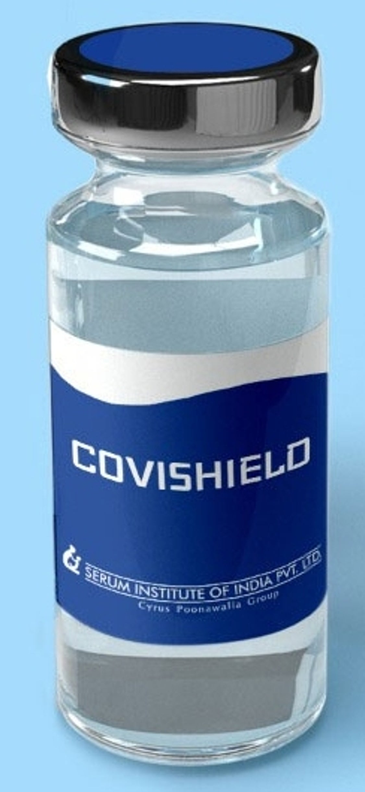

Vaccine
Getting vaccinated is safer than getting infected.
COVID-19 vaccines were developed using science that has been around for decades.
COVID-19 vaccines are not experimental. They went through all the required stages of clinical trials. Extensive testing and monitoring have shown that these vaccines are safe and effective.
Vaccines work by training and preparing body’s natural defences i.e immune system to recognize and fight off viruses and bacteria.
After vaccination, if body is later exposed to those disease causing viruses, body is immediately ready to fight back.
On 16th January 2021, India started its national vaccination program.
5% of Indian population has received at least one dose of vaccination.
Covaxin is a vaccine, manufactured by Hyderabad based Bharat Biotech in collaboration with Indian Council of Medical Research.
Covishield was manufactured by SERUM Institute of India PVT LTD.

Covishield

Serum Institute of India (SII) is an Indian biotechnology and biopharmaceuticals company. It is the one of the world's largest vaccine manufacturer.
Also covishield manufactured by Serum Institute of India (SII).Covishield is a vaccine and may prevent you from getting COVID-19 disease.
The COVISHIELD Vaccine includes the following ingredients:
L-Histidine, L-Histidine hydrochloride monohydrate, Magnesium chloride hexahydrate,
Polysorbate 80, Ethanol, Sucrose, Sodium chloride, Disodium edetate dihydrate (EDTA), Water for injection.
The COVISHIELD Vaccine will be given to you as an intramuscular (IM) injection only, preferably in
the deltoid muscle.
The covishield vaccination course consists of two separate doses of 0.5 ml each. The second
dose should be administered between 4 to 6 weeks after the first dose. However, there is data
available for administration of the second dose up to 12 weeks after the first dose from the
overseas studies.The effectiveness of the Covishield vaccine is nearly 90% as per the global reports.
Efficacy after the second dose can vary from 70-90%.
Covaxin
Bharat Biotech has successfully developed COVAXIN.The Covaxin vaccine is a vaccine that aims to protect against COVID-19.
Covaxin (codenamed as BBV152) is an inactivated virus-based COVID-19 vaccine developed by Bharat Biotech in collaboration with the Indian Council of Medical Research.
As an inactivated vaccine, Covaxin uses a more traditional technology that is similar to the inactivated polio vaccine.
The vaccine is developed using Whole-Virion Inactivated Vero Cell derived platform technology. Inactivated vaccines do not replicate and are therefore unlikely to revert and cause pathological effects. They contain dead virus, incapable of infecting people but still able to instruct the immune system to mount a defensive reaction against an infection.
COVAXIN® is included along with immune-potentiators, also known as vaccine adjuvants, which are added to the vaccine to increase and boost its immunogenicity.
It is a 2-dose vaccination regimen given 28 days apart.
It is a vaccine with no sub-zero storage, no reconstitution requirement, and ready to use liquid presentation in multi-dose vials, stable at 2-8oC.
The effectiveness of the Covaxin vaccine is nearly 81%.This vaccine can be 78-95% effective after the second dose.